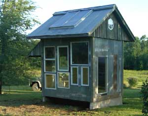
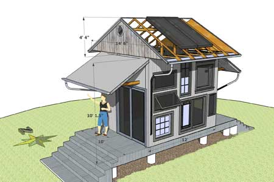
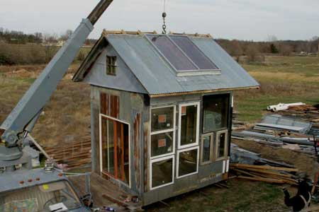
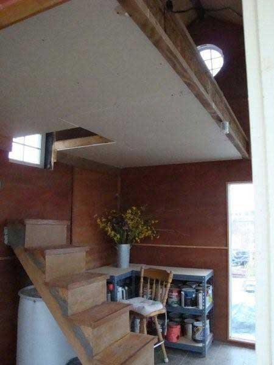

The idea behind my greenhouse/guesthouse concept is to build a greenhouse that has everything you need to live, and not a centimeter to waste. But you don’t have to use it as a greenhouse. It can be a guesthouse or an energy-efficient small home. The design is flexible, so you can incorporate whatever recycled materials you can find. Even if you buy some of the materials and hire a bit of help, you can build a greenhouse for about $3,800.
If you plan to use the building as a greenhouse, use insulated, wood-framed windows that aren’t coated with low-e or solar film, because the coating limits heat gain. Adequate thermal mass and a well-insulated floor and walls are necessary to store enough heat for a couple of days without sun. Thermal mass, such as concrete, brick or stone, helps moderate heat, tempering the thermal swings throughout the day and night.
To make a guesthouse, include a loft large enough for a double bed upstairs - the warmest part of the building - for cozy winter nights. (See photo in the Image Gallery.) In summer, the soffit design encourages airflow in the loft to keep it cool. To live totally off-grid and harvest water, install a metal roof at an angle appropriate for optimal solar performance for your area. To find this information, go to the Astronomical Applications Department of the U.S. Naval Observatory. (Click “Data Services,” then select “Altitude and Azimuth of the Sun or Moon During One Day.”)
Because the greenhouse/guesthouse is so small, you shouldn’t need a building permit in most locations, but check with local authorities before you build your own greenhouse. The maximum size of a building allowed in my county without a permit is 10-by-12 feet, so the greenhouse/guesthouse is designed to those dimensions.
To build your own greenhouse, start with a level building site, but make sure the site slopes enough to drain water from the building. Then cover the area where you’ll build the greenhouse with a weed barrier and gravel.
Make a 10-foot-by-12-foot grid (on center) of concrete deck pads - three rows of four pads. Put a 10-foot rot-resistant 2-by-4 (flat, not on edge) on the short rows. If you don’t plan to move the building, instead of deck pads use permanent concrete piers that are deeper than the frost line. After building the greenhouse, I moved it onto concrete barriers (used to divide traffic during road construction) and attached the greenhouse to them with hurricane clips, wedge anchors and 2-by-4s.
Cover the deck pads and 2-by-4s with treated plywood, or rot-resistant 1-by-6 or 1-by-8 lumber. Place laminate joists on 24-inch centers perpendicular to the 2-by-4s and use three-quarter-inch plywood (or 2-by-10s) for rim joists to hold the joists together on the ends.
Before installing the three-quarter-inch plywood subfloor on top of the laminate joists, fill the spaces between joists with cellulose insulation. Renting a blower makes this job much faster and easier. Then glue and screw the plywood subfloor to the joists.
Next, start framing walls. Frame up plywood panels with two vertical 10-foot 2-by-6 studs on the long sides, and four short horizontal 2-by-6s. The length of the short 2-by-6s depends on the width you want to make the panels. This method uses less lumber overall, and shorter lengths are cheaper. Sometimes you can find free 4-foot 2-by-6s if you ask a builder.
Set up the panels, marking and cutting out spaces as necessary for the windows you have. Screw the panels to the floor and each other using 2-inch screws. When you have the north wall and one panel of the east and west walls in place, the structure should be stable. Put a 12-foot 2-by-6 across the top of the north wall as a second plate, making sure it’s straight on the top edge. Nail this in place.
You can put the windows in and siding on before you raise the walls, but they’ll be heavy. If you take this approach, be sure to have mechanical power or lots of volunteer help.
For the front wall, arrange the horizontal framing to fit between windows. If the windows have mounting fins, simply attach them to the plywood; otherwise, you’ll need to make 2-by-6 frames (including headers) to accommodate the windows.
On all but the south wall, tape around the windows with membrane tape when you put on house wrap (Tyvek or similar brand) and siding. The south wall has more windows and will be harder to wrap, so for that side, paint all the plywood with latex paint and tape the joints in the sheathing to avoid using house wrap.
The opening between the west wall and the south wall should be 5 feet - the size of a sliding glass door. You could also frame the space for a different type of recycled door. There’s a similar space in the east wall. If you opt not to have a door on that side, you could build a wall 5-feet wide and 10-feet tall.
When the walls are up, put the rest of the double plate lumber on top of the walls tying them together. The walls measure a total of 10 feet, 1 1/2 inches from the floor. The door threshold is framed at least 3 inches from the floor to allow the thermal mass floor system to be installed. I intended to use sand and bricks for thermal mass, but decided to use concrete board and tile.
I left a space between the loft and the south wall to allow light and air into the loft. This also solved the problem of having to plan the windows around the loft floor and wall intersection. To frame the loft floor, extend the framing from the north wall to the south wall if the joists don’t interfere with the windows in the south wall. Alternatively, you can run a 2-by-10 or laminate beam from the west wall to the east wall (leaving an open space in front of the south windows). Then run the loft joists from the north wall to this 2-by-10 or laminate beam. (Be sure the bottom of the joists is at least 7 feet from the main floor to allow adequate headroom.)
If you make the loft floor 6 1/2 feet from the north wall, you’ll have enough room for a bed (or even two double beds) in the loft. I framed the loft floor with 2-by-4s at 16 inches on center, using half-inch plywood subfloor and wood laminate flooring.
I framed the roof on the ground for safety and convenience, then lifted it in place with a boom truck. (See photo in the Image Gallery.) I made custom trusses of 2-by-4s to make the most of the space in the peak of the roof. Put purlins (boards that are perpendicular to the rafters and that support the roofing material) on 24-inch centers. Sheathe the interior of the roof (the loft ceiling) with three-eighths-inch plywood before covering the roof so you can insulate the ceiling from above. I used scrap pieces of rigid insulation between the purlins, then put quarter-inch fan-fold insulation on top of that as a weather barrier and thermal break.
Because I didn't have quite enough of one style of corrugated metal roofing, I built the solar panel directly on the roof framing with a piece of dark metal inside for a collection surface. The solar panel is made with a couple of sliding door panels screwed to the top of the 2-by-4 frame. I installed a car heater core in a box against the roof. Hot air blows through it and the heat is transferred via water pipes into a hot water storage tank under the stairs. Hot water is pumped through PEX pipe under the floor tile to heat the greenhouse/guesthouse.
For inexpensive ridge vents, I made saddles of 2-by-4 scraps and screwed perforated metal onto the exposed faces, then roofed lengthwise over the top of the 2-by-4s with tin. (See photo in the Image Gallery.)
The exterior is finished with salvaged barn metal - including holes and rust spots. The siding just serves as a UV and water diversion barrier to protect the vapor barrier. The vapor barrier can be two layers of a house wrap, a paintable membrane or building felt. For the greenhouse/guesthouse, I used a layer of latex paint and sealed the joints with a window membrane. The added protection of the steel siding creates protection against all kinds of weather.
You could fill the walls with cellulose or foam insulation when you build them on the ground. If you use cellulose, the inside paneling could be installed before raising the walls. You could cover the base where the walls are toenailed into the floor with trim boards. If you use foam insulation, the walls could be finished later. I used fiberglass in the walls, but I would use spray foam if I were to do this again.
I installed conduit for a 12-volt power system. It won’t take much more than a 400-watt wind turbine and four batteries to produce enough electricity for the greenhouse/guesthouse. A rainwater harvesting system and a hand pump or electric pump could easily provide running water. I have plans to install a solar composting toilet and shower on the east side under the shed roof overhang.
A tiny wood or gas stove easily would provide backup heat for the studio. To cover the perforated steel vent material in the soffits in winter, I put rigid foam over them between the rafters. Even without thermal mass in the floor, the studio got below freezing only about three times last winter.
The 24-inch overhangs really keep the studio cool in the summer. The soffits are open, allowing an amazing amount of air to pass through. An evaporating cooler or burlap mister would cool things down considerably.
Total: $3,865
|
 KENTON KNOWLES This greenhouse was designed to be used as a guesthouse or studio. |
 KENTON KNOWLES Depending on the materials you have for your greenhouse, the design will change slightly. |
 KENTON KNOWLES The roof was lifted into place with a boom truck. Note the ridge vents saddles of 2-by-4s. The metal has not yet been attached. |
|
 KENTON KNOWLES The loft is the length of the building. The open side faces south. |
|
|